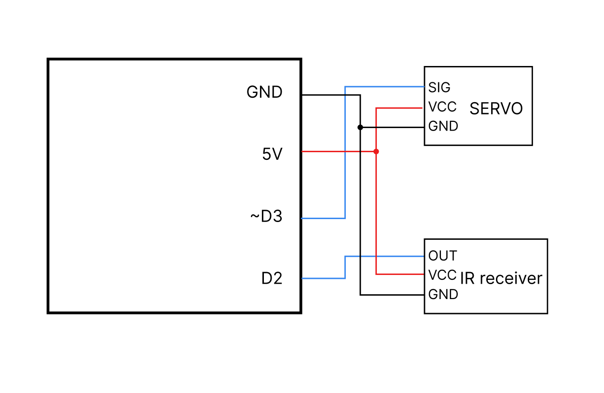
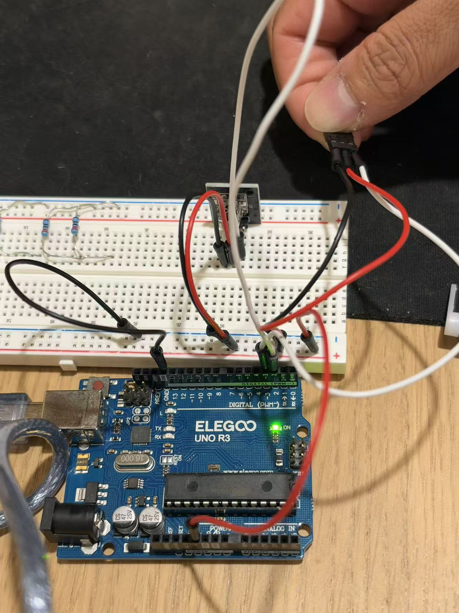
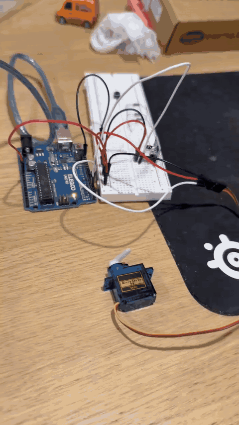
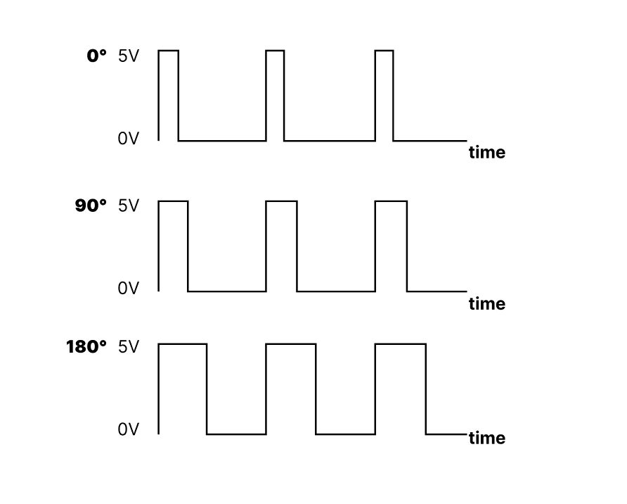

My project uses an infrared (IR) receiver as an input and a servo motor as an output. Pressing a button on the remote control changes the servo's target position between 0° and 90°. The code uses two libraries: IRremote to decode infrared commands and Servo to control the motor.


The code below documents the intended D2/D3 wiring. Verify it against the exact sketch you uploaded to your Arduino before submitting.
// Include the infrared remote control library.
#include <IRremote.hpp>
// Include the servo motor control library.
#include <Servo.h>
// Create a Servo object for the motor.
Servo myServo;
// Keep track of the current servo angle.
int angle = 0;
void setup() {
// Open the serial monitor connection at 9600 baud.
Serial.begin(9600);
// Read infrared commands using the receiver on digital pin 2.
IrReceiver.begin(2, DISABLE_LED_FEEDBACK);
// Connect the servo control signal to digital pin 3.
myServo.attach(3);
// Start the servo at 0 degrees.
myServo.write(0);
}
void loop() {
// Check whether a complete infrared message has arrived.
if (IrReceiver.decode()) {
// Ignore unknown commands and automatically repeated signals.
if (IrReceiver.decodedIRData.protocol != UNKNOWN && !(IrReceiver.decodedIRData.flags & IRDATA_FLAGS_IS_REPEAT)) {
// Check if the servo is currently at its initial angle.
if (angle == 0) {
// Change the target angle to 90 degrees.
angle = 90;
} else {
// Change the target angle back to 0 degrees.
angle = 0;
}
// Move the servo to the selected target angle.
myServo.write(angle);
// Print the current target angle for debugging.
Serial.println(angle);
}
// Continue receiving infrared commands.
IrReceiver.resume();
}
}Pin 2: The IR receiver's OUT pin sends incoming remote-control signals to the Arduino. Pin 3: The servo's signal wire receives timed position-control pulses from the Servo library. 5V and GND: Power and shared ground for the receiver and a small, lightly loaded servo; the servo may require a separate regulated 5V supply if its current draw causes resets (with grounds connected).
0° and 90°: These are the two target positions, chosen to make movement easy to observe. 9600: Serial Monitor baud rate used to print the target angle. UNKNOWN and IRDATA_FLAGS_IS_REPEAT: Filter unknown signals and held-button repeat messages, so a single held press is not intended to trigger repeated toggles.
No analogRead() is used, so the analog-sensor calibration requirement does not apply.


I would check the validity of incoming signals and reject implausible readings. For a sensor whose value is expected to remain stable while being checked, multiple readings can be used to confirm an input rather than trusting a single measurement. With my IR receiver, protocol decoding and rejecting unknown commands provides an initial validity check; one-off remote button presses should not be rejected merely because they cannot be sampled three times.
// Pseudocode for a repeatedly sampled, stable input:
read1 = readSensor()
read2 = readSensor()
read3 = readSensor()
if atLeastTwoReadingsAgree(read1, read2, read3):
use(majorityValue)
else:
ignoreThisReading()For a numerical sensor, I would take several measurements and use a moving average to reduce random fluctuations. Averaging reduces independent noise, although it also makes the result respond more slowly to real changes. My IR receiver provides decoded digital commands, rather than a continuously varying analog measurement, so this technique is a general solution to the question, not a step used in my actual code.
// Pseudocode for a numerical sensor:
sum = 0
for i from 1 to 10:
sum = sum + readSensor()
wait(aShortInterval)
filteredValue = sum / 10
use(filteredValue)I used ChatGPT while planning and documenting this assignment. I asked for a minimal Arduino project satisfying the two-library requirement, help with wiring an infrared receiver and servo motor, a commented example sketch, an explanation of the servo's voltage-versus-time graph, and help formatting this webpage. I reviewed the design and changed the servo pin from D9 to D3 to match my actual wiring. AI was useful for organizing the documentation and explaining the underlying concepts, but I still needed to verify the circuit, code, and measurements myself.
AI disclosure requirement: The assignment also asks for a shared LLM conversation link or cited prompts and output. Add your conversation share URL here before submitting: [INSERT CONVERSATION SHARE LINK].